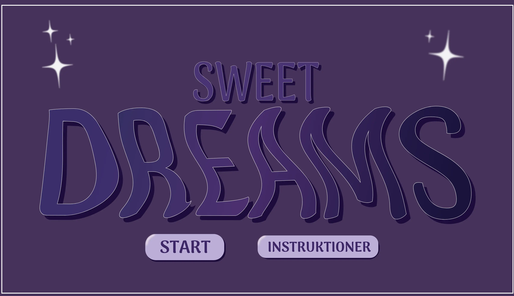
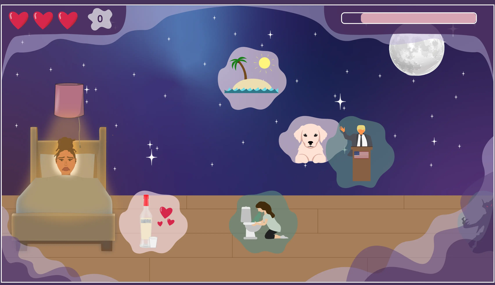
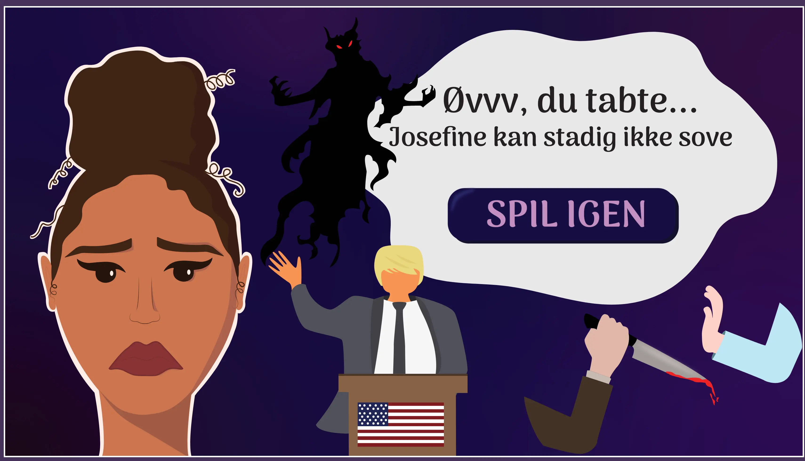
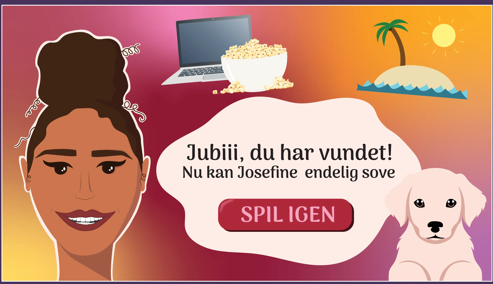
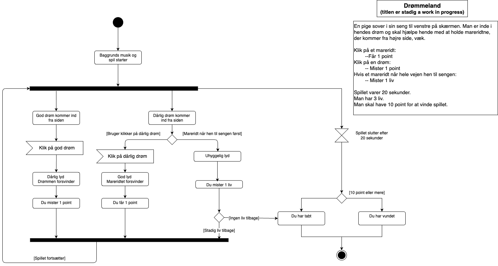
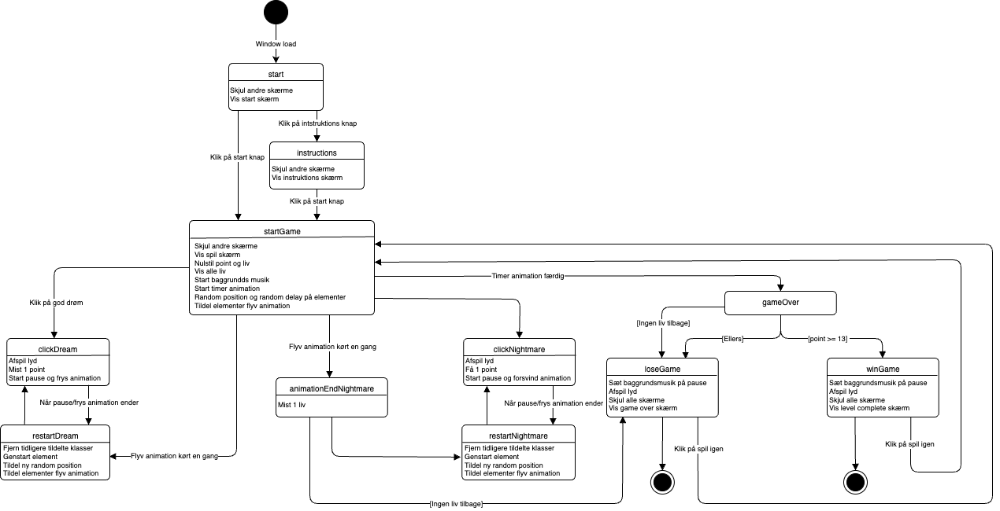

Lad os kode et spil
I dette tema skulle vi lære at kode vores eget spil og vi har derfor lært at bruge css animationer, Javascript og Illustrator til at udvikle vores illustrationer og animationer.
Vi startede med at lave en ’paper prototype’ for at teste hvordan vores spil ville komme til at virke. Vi har lært at tegne i illustrator og eksportere det til SVG-filer som vi kunne bruge i vores spil. Vi har arbejdet med css animationer,
som kunne styre vores elementer f.eks. få dem til at flyve ind fra siden i et bestemt tempo, fra en bestemt placering, i en bestemt rækkefølge. Derudover har vi brugt javascript til at tildele elementerne de forskellige animationer og
f.eks. lært hvordan man får skærmen til at skifte når spillet er slut, bland andet vha. funktioner.




På billederne overnfor ses startskærmem, spilskærmen og taber/vinderskærmen for mit færdige spil.
josefineyolanda.dk/spilDiagrammer
Vi har også lavet aktivitets- og state machine diagrammer, som bruges til at beskrive interaktive systemer. Helt forenklet har vi altså noteret hvilke forskellige muligheder og udfald der kan være i vores spil.


På billederne ses mit aktivitets- og state machine diagram. Aktivitetsdiagrammet er mere overordnet og blev lavet tidligere i processen for at få en ide om opbygningen, hvorimod state machine diagrammet er meget specifikt og viser mig præcis hvad jeg skal kode i javascript.
En ny verden af kode
Dette tema gav et virkelig godt indblik i hvor meget man egentlig kan med kode. Javascript og css animationer åbnede en helt ny verden i forhold til, hvad man kan få sine elementer til at gøre på skærmen.